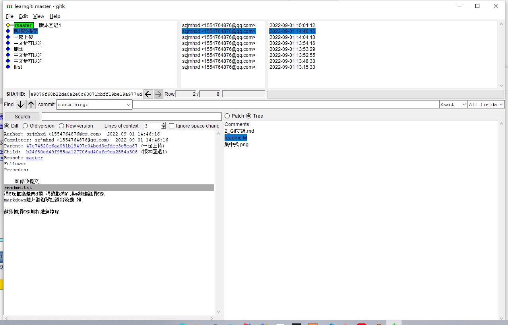

时光穿梭机
版本管理 可以任意选择各个时间创建的版本 就像时光机一样
我们已经成功地添加并提交了一个readme.txt文件，现在，是时候继续工作了，于是，我们继续修改readme.txt文件，改成如下内容：
1 | 一会试试md可不可以 可以 |
现在，运行git status命令看看结果：
1 | git status |
git status命令可以让我们时刻掌握仓库当前的状态，上面的命令输出告诉我们，readme.txt被修改过了，但还没有准备提交的修改。
虽然Git告诉我们readme.txt被修改了，但如果能看看具体修改了什么内容，自然是很好的。比如你休假两周从国外回来，第一天上班时，已经记不清上次怎么修改的readme.txt，所以，需要用git diff这个命令看看：
1 | git diff readme.txt |

git diff顾名思义就是查看difference，显示的格式正是Unix通用的diff格式，可以从上面的命令输出看到，我们在第一行添加了一个distributed单词。
我们可以看到git没有记录你是怎么修改的，而是把所有被修改的部分删除，新增修改后的语句
知道了对readme.txt作了什么修改后，再把它提交到仓库就放心多了，提交修改和提交新文件是一样的两步，第一步是git add：
1 | git add readme.txt |
同样没有任何输出。在执行第二步git commit之前，我们再运行git status看看当前仓库的状态：
1 | git status |

git status告诉我们，将要被提交的修改包括readme.txt，下一步，就可以放心地提交了：
1 | git commit -m "新修改提交" |
一行未改变，新增三行，删除两行
提交后，我们再用git status命令看看仓库的当前状态：
1 | git status |

Git告诉我们当前没有需要提交的修改，而且，工作目录是干净（working tree clean）的。
小结
- 要随时掌握工作区的状态，使用
git status命令。 - 如果
git status告诉你有文件被修改过，用git diff可以查看修改内容。
版本回退
现在，你已经学会了修改文件，然后把修改提交到Git版本库，现在，再练习一次，修改readme.txt文件如下：
1 | Git is a distributed version control system. |
然后尝试提交：
1 | $ git add readme.txt |

像这样，你不断对文件进行修改，然后不断提交修改到版本库里，就好比玩RPG游戏时，每通过一关就会自动把游戏状态存盘，如果某一关没过去，你还可以选择读取前一关的状态。有些时候，在打Boss之前，你会手动存盘，以便万一打Boss失败了，可以从最近的地方重新开始。Git也是一样，每当你觉得文件修改到一定程度的时候，就可以“保存一个快照”，这个快照在Git中被称为commit。一旦你把文件改乱了，或者误删了文件，还可以从最近的一个commit恢复，然后继续工作，而不是把几个月的工作成果全部丢失。
现在，我们回顾一下readme.txt文件一共有几个版本被提交到Git仓库里了：
当然了，在实际工作中，我们脑子里怎么可能记得一个几千行的文件每次都改了什么内容，不然要版本控制系统干什么。版本控制系统肯定有某个命令可以告诉我们历史记录，在Git中，我们用git log命令查看：
1 | git log |

git log命令显示从最近到最远的提交日志。
如果嫌输出信息太多，看得眼花缭乱的，可以试试加上--pretty=oneline参数：
1 | git log --pretty=oneline |

需要友情提示的是，你看到的一大串类似b24f80...的是commit id（版本号），和SVN不一样，Git的commit id不是1，2，3……递增的数字，而是一个SHA1计算出来的一个非常大的数字，用十六进制表示，而且你看到的commit id和我的肯定不一样，以你自己的为准。为什么commit id需要用这么一大串数字表示呢？因为Git是分布式的版本控制系统，后面我们还要研究多人在同一个版本库里工作，如果大家都用1，2，3……作为版本号，那肯定就冲突了。
每提交一个新版本，实际上Git就会把它们自动串成一条时间线。如果使用可视化工具查看Git历史，就可以更清楚地看到提交历史的时间线：

好了，现在我们启动时光穿梭机，准备把readme.txt回退到上一个版本，也就是add distributed的那个版本，怎么做呢？
首先，Git必须知道当前版本是哪个版本，在Git中，用HEAD表示当前版本，也就是最新的提交1094adb...（注意我的提交ID和你的肯定不一样），上一个版本就是HEAD^，上上一个版本就是HEAD^^，当然往上100个版本写100个^比较容易数不过来，所以写成HEAD~100。
现在，我们要把当前版本append GPL回退到上一个版本add distributed，就可以使用git reset命令：
1 | git reset --hard HEAD^ |

--hard参数有啥意义？这个后面再讲，现在你先放心使用。
看看readme.txt的内容是不是版本add distributed：
1 | $ cat readme.txt |

果然被还原了。
还可以继续回退到上一个版本wrote a readme file，不过且慢，让我们用git log再看看现在版本库的状态：

最新的那个版本append GPL已经看不到了！好比你从21世纪坐时光穿梭机来到了19世纪，想再回去已经回不去了，肿么办？
办法其实还是有的，只要上面的命令行窗口还没有被关掉，你就可以顺着往上找啊找啊，找到那个append GPL的commit id是b24f80...，于是就可以指定回到未来的某个版本：
1 | git reset --hard b24f80 |

版本号没必要写全，前几位就可以了，Git会自动去找。当然也不能只写前一两位，因为Git可能会找到多个版本号，就无法确定是哪一个了。
再小心翼翼地看看readme.txt的内容：
1 | cat readme.txt |
果然，我胡汉三又回来了。
Git的版本回退速度非常快，因为Git在内部有个指向当前版本的HEAD指针，当你回退版本的时候，Git仅仅是把HEAD从指向append GPL：
1 | ┌────┐ |
改为指向add distributed：
1 | ┌────┐ |
然后顺便把工作区的文件更新了。所以你让HEAD指向哪个版本号，你就把当前版本定位在哪。
现在，你回退到了某个版本，关掉了电脑，第二天早上就后悔了，想恢复到新版本怎么办？找不到新版本的commit id怎么办？
在Git中，总是有后悔药可以吃的。当你用$ git reset --hard HEAD^回退到add distributed版本时，再想恢复到append GPL，就必须找到append GPL的commit id。Git提供了一个命令git reflog用来记录你的每一次命令：
1 | git reflog |
终于舒了口气，从输出可知，append GPL的commit id是b24f80e，现在，你又可以乘坐时光机回到未来了。
小结
现在总结一下：
HEAD指向的版本就是当前版本，因此，Git允许我们在版本的历史之间穿梭，使用命令git reset --hard commit_id。- 穿梭前，用
git log可以查看提交历史，以便确定要回退到哪个版本。 - 要重返未来，用
git reflog查看命令历史，以便确定要回到未来的哪个版本。